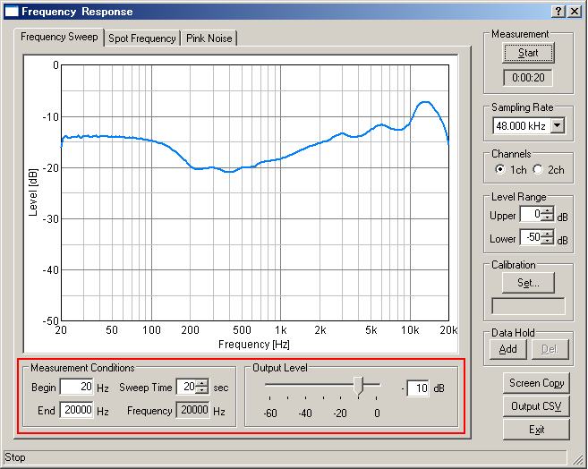

DSSF3 > RA > Reference Manual > Frequency response

| Commands or options | Descriptions | |
|---|---|---|
| Measurement Conditions | Begin | Input the frequency to start the measurement. The range of the input starts from 1 up to 1/2 of the sampling rate. |
| End | Input the frequency to end the measurement. The range of the input starts from 1 up to 1/2 of the sampling rate. | |
| Sweep Time | Input the time to sweep from the start frequency to the end frequency. The input value should be more than 1. | |
| Frequency | Display the frequency that is being measured. | |
| Output Level | Set the level of the measurement. The range of the input is between 0 (maximum) and 60 (minimum). | |
DSSF3 > RA > Reference Manual > Frequency response